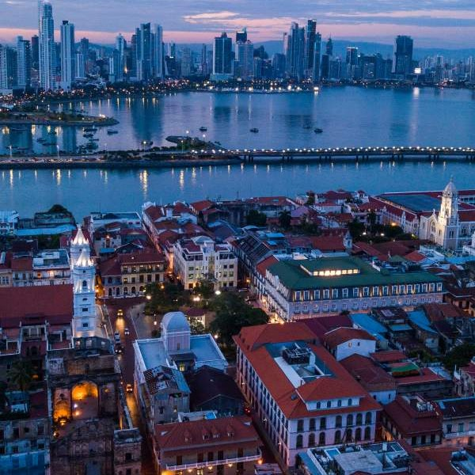
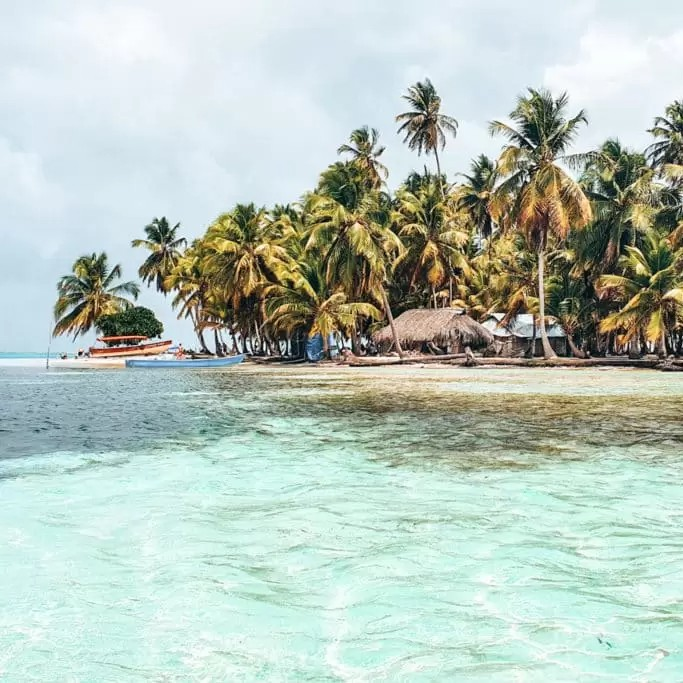

Panama
From Canal Marvels to Tropical Paradises, A Journey Through Panama's Rich Tapestry
Panama's geographical location has always fascinated me, and as I touched down in Panama City, I could feel the energy of a nation that connects continents. My journey began at the iconic Panama Canal, where I marveled at the engineering feat that has shaped global trade for over a century.
 Wandering through the cobbled streets of Casco Viejo, the old quarter of Panama City, was like stepping back in time. I explored charming plazas, visited historic churches, and savored delicious empanadas at local cafes. The juxtaposition of colonial architecture against a modern skyline was a testament to Panama's rich history and promising future.
A short flight away, the San Blas Islands beckoned with their pristine beauty. I spent days on powdery white-sand beaches, snorkeling amidst vibrant coral reefs, and meeting the Kuna Yala people, who have preserved their culture in this tropical paradise for centuries. The simplicity and serenity of life here left an indelible mark on my soul.
Heading to the highlands, I arrived in Boquete, a haven for nature enthusiasts. Hiking through the lush cloud forests of Volcan Baru National Park was an exhilarating experience. Standing atop Panama's highest peak, I watched the sunrise over both oceans, a moment of pure wonder.
 Bocas del Toro offered a different kind of adventure, with its vibrant marine life and laid-back island vibes. I explored underwater caves, swam with dolphins, and tasted the freshest seafood imaginable. The eclectic mix of cultures here, from indigenous communities to expat artists, made every moment unforgettable.
A boat journey through the Chagres River brought me to an Emberá indigenous village. I had the privilege of learning about their traditions, craftsmanship, and vibrant dances. Sharing a meal with the Emberá was a humbling experience, showcasing the warmth of their hospitality.
My journey concluded in Santa Catalina, a surfers' haven on the Pacific coast. I tried my hand at riding the waves and relished the thrill of conquering the ocean's power. The sunsets here were a breathtaking spectacle, painting the sky with hues of orange and pink.
As I bid farewell to Panama, I couldn't help but reflect on the diversity and beauty of this incredible country. From the bustling metropolis of Panama City to the tranquility of remote islands and highland forests, Panama offers a tapestry of wonders waiting to be explored.
I hope this journey through Panama has sparked your wanderlust and provided a glimpse into the magic of this crossroads nation. Join me on future adventures as we continue to unravel the marvels of the Americas. Until then, may your travels be filled with the enchantment and allure of Panama!